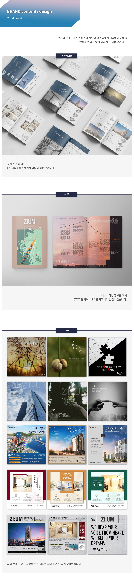

[ 업 무 ]
· 본사 브랜딩 블로그 관리
· SNS 브랜드 홍보 시안 제작 및 광고 집행
· 대내외적인 홍보물 제작 (현수막, 공사지명원, 사보 등)

[ 회 고 ]
온·오프라인의 다양한 디자인 시안을 제작하면서 여러가지 피드백을 받고 이를 조정해나가는 과정에서 항상 고민이 있었습니다. 디자이너의 관점만을 고집하지 않고, 다른 이들의 의견을 무조건적으로 수용하지도 않으면서 균형을 이룰 수 있는 것 또한 디자이너의 역량이라는 생각이 들었습니다. 또한 다양한 시안에 도전해보며 많은 디자인적인 자료를 접할 수 있게 되었고, 나아가 관심분야인 UX/UI 디자인에 대한 깊이 있는 학습에도 도전하고자 하는 목표를 가지게 되었습니다.